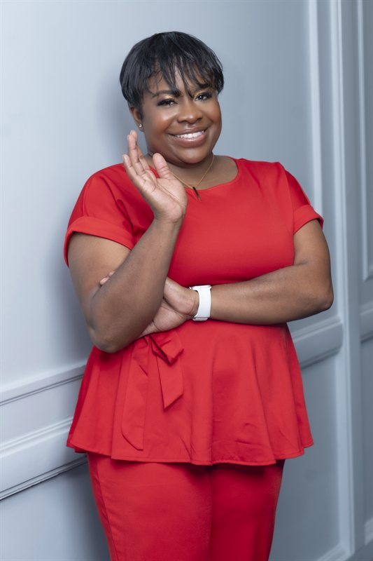
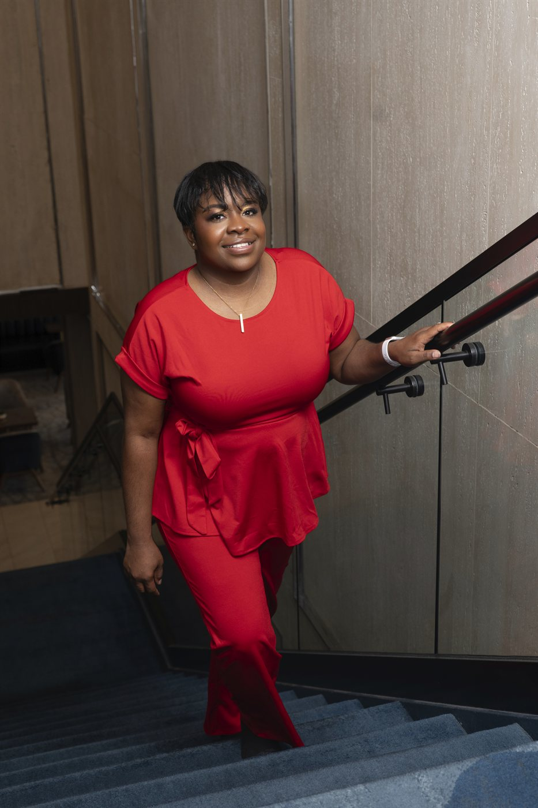

Shavonda Lawson
Co-Founder & Chief Executive Officer, The Nest Montessori Network
Shavonda Lawson is the Co-Founder and CEO of The Nest, a Cognia-accredited network of Montessori schools in Central Texas. A Montessori-credentialed educator with nearly a decade in early childhood education and a former military spouse who taught from Japan to Germany, she builds schools where every family finds a village.
About

Shavonda Lawson is the Co-Founder and Chief Executive Officer of The Nest, a growing, Cognia-accredited network of Montessori schools in Central Texas serving children from infancy through adolescence. A childcare entrepreneur and Montessori advocate with nearly a decade in early childhood education, she holds a Montessori Infant/Toddler credential and is currently pursuing her Bachelor’s in Early Childhood Education.
Shavonda’s path to school leadership was shaped by a global one. As a former military spouse, she lived and taught around the world, from Japan to Germany, where she developed an international perspective on child development and the power of nurturing diverse communities. That perspective now anchors The Nest’s culture: schools built as villages, where families are partners and every child is known.
Beyond the classroom, Shavonda is the co-founder of Nest Paint, a coloring book brand encouraging creative expression in children, and she mentors aspiring childcare owners with the resources and business tools to build sustainable, enriching programs. She is a mom, a planner enthusiast, and a builder of systems that support women, educators, and families.
Her mission has never changed: impact, integrity, and love. Building something beautiful, for the children and for the future.
Ventures
-
The Nest Montessori Network
A Cognia-accredited network of Montessori schools serving Central Texas families from infancy through adolescence.
-
Nest Paint
A children’s coloring book brand encouraging creative expression.
-
Mentorship & Consulting
Supporting aspiring childcare owners with the tools to build sustainable, enriching programs.
Press & Speaking
Speaking and media inquiries welcome. Reach Shavonda at hello@shavondalawson.com